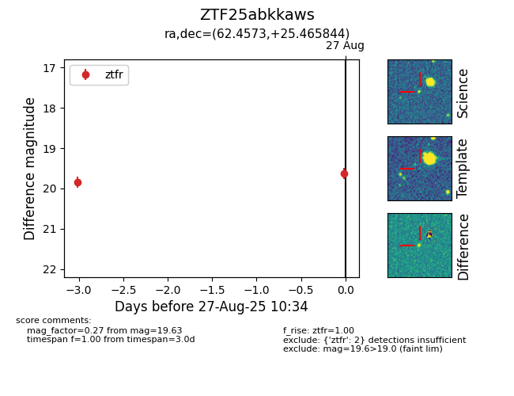

Target ZTF25abkkaws at 2025-08-27 11:54, see:
FINK: fink-portal.org/ZTF25abkkaws
Lasair: lasair-ztf.lsst.ac.uk/objects/ZTF25abkkaws
ALeRCE: alerce.online/object/ZTF25abkkaws
alt names
ZTF25abkkaws (ztf,fink)
coordinates:
equatorial (ra, dec) = (62.4573,+25.46584)
galactic (l, b) = (169.5610,-18.94976)
photometry
last ztfg=19.78, ztfr=19.63
1 ztfg, 2 ztfr detections
